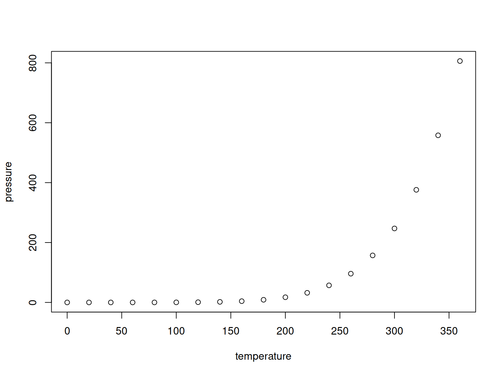

ciudad <- as.character('Ambato')
str(ciudad)## chr "Ambato"pais_andes <- as.character(c('Argentina', 'Bolivia', 'Chile', 'Colombia', 'Ecuador', 'Perú', 'Venezuela'))
str(pais_andes)## chr [1:7] "Argentina" "Bolivia" "Chile" "Colombia" "Ecuador" "Perú" ...summary(cars)## speed dist
## Min. : 4.0 Min. : 2.00
## 1st Qu.:12.0 1st Qu.: 26.00
## Median :15.0 Median : 36.00
## Mean :15.4 Mean : 42.98
## 3rd Qu.:19.0 3rd Qu.: 56.00
## Max. :25.0 Max. :120.00You can also embed plots, for example:

Note that the echo = FALSE parameter was added to the
code chunk to prevent printing of the R code that generated the
plot.